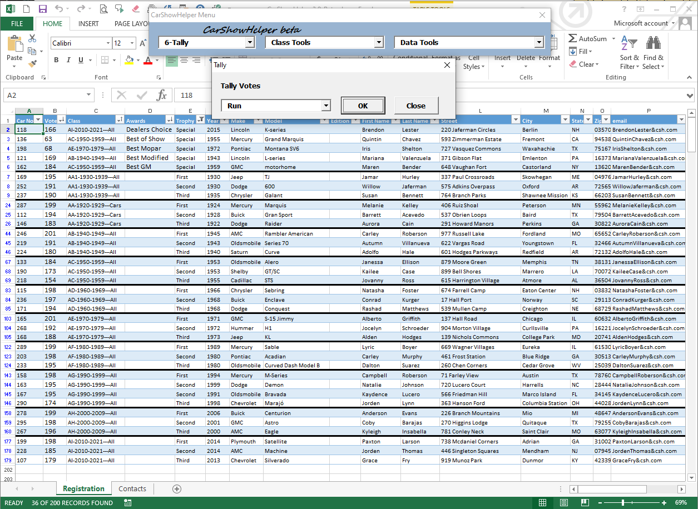

The figure shows the Registration sheet after Tally using the PracticeClass, SmallJudgingSheet, Most Points settings. The special awards are at the top. A heavy line separates the classes.
The Tally Dialog Options:
Reset - Shows all registered cars sorted by car number.
Run - Shows only the show trophy and special award winners grouped by class
Run & Print - Run + prints a report of only the winner's name, car description, and award or trophy.
Run & Save - saves the winner report as a PDF.
Run & Save & e-mail - Internet connectivity required. Saves the report PDF and e-mails a copy to selected recipient.
If you don't have a printer or internet, show the computer to the announcer.
Never run Tally a second time without a Reset in between.

Car Show Helper Registration sheet and Tally Dialog.